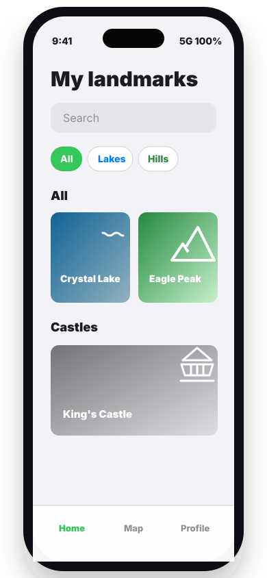
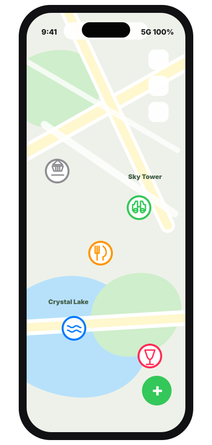

iPhone app for saved places
Landmarky
Save personal landmarks with photos, notes, categories, coordinates, and Apple Maps navigation.


Uses Apple Maps
Save a place, see it on the map, then navigate back.
Landmarky uses Apple Maps through the iOS map experience. Your landmarks appear as category-colored map annotations, and the Navigate action opens directions when you are ready to go.
App categories
All categories from Landmarky
These match the app's category list, system icon choices, and annotation colors.
Add landmarks fast
Create a landmark from your current position or enter exact latitude and longitude.
Organized map view
Filter and recognize places with categories, colors, photos, and notes.
Private on device
No accounts, ads, analytics, or tracking. Your saved places stay local.
Built for simple privacy
No accounts, ads, analytics, or tracking
Landmarky stores your profile, landmarks, coordinates, notes, and selected photos locally on your iPhone.